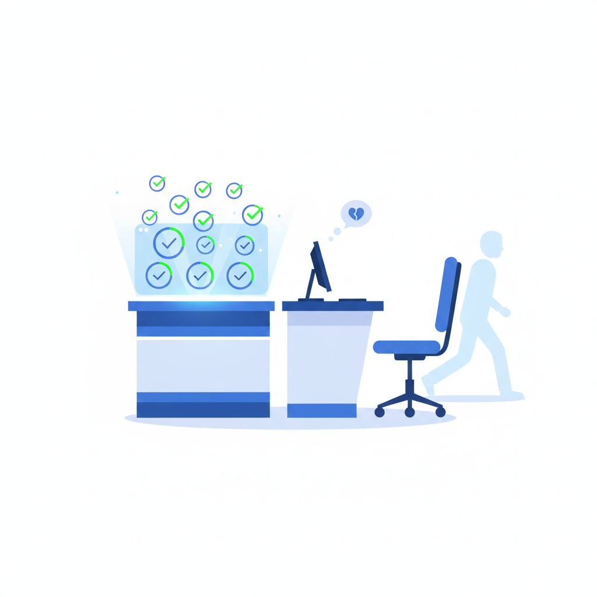
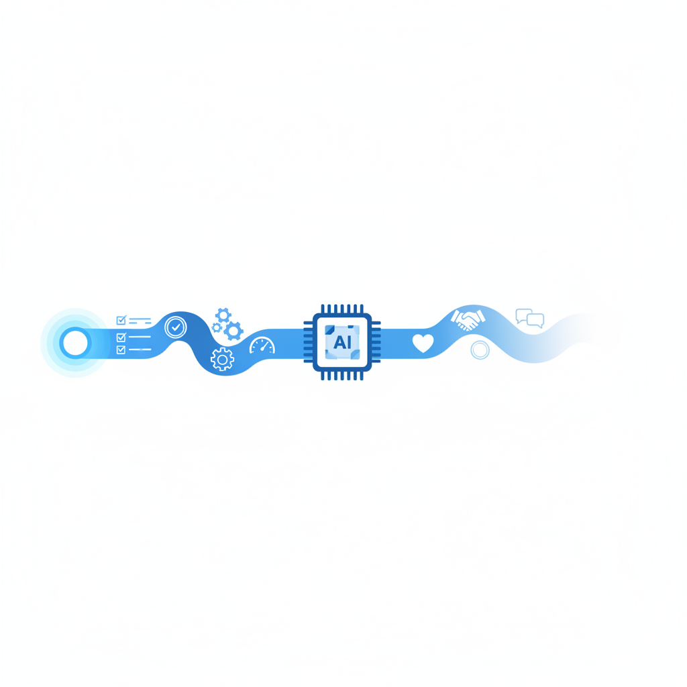

一、800个人的替代，和一次公开的认错
2024年6月，Klarna的CEO Sebastian Siemiatkowski做了一件让整个SaaS行业兴奋的事：他宣布公司的AI客服在上线第一个月处理了230万次客户对话，平均解决时间从11分钟压缩到2分钟，效果相当于800名全职客服。
每一项指标都是绿灯。等待时间下降，解决率上升，工单成本从几美元降到几美分。投资人、媒体和分析师看到的都是同一个故事——AI客服成功了。但几乎没有人注意到另一个不起眼的数字在悄悄上升：同一个客户就同一个问题反复联系客服的比例。AI能在两分钟内给出回复，但退款纠纷、跨境争议、情绪化投诉这些场景下，两分钟的标准回复不是解决了问题，而是制造了新一轮联系。客户对这些回复的评价集中在同一个词组——"千篇一律、缺乏细微差别"。
故事的转折发生在2025年中。Siemiatkowski在一次公开采访中说出了一句让很多人意外的话："我们走得太远了。"Klarna开始重新招聘人工客服，特别是为那些需要判断力和灵活应对的高复杂度场景配备真人。
到2026年，Klarna落地了一个混合模型：AI处理标准高频问题——查余额、改地址、常规退款；人工接管升级案例、连续投诉和高价值客户的异常请求。一个反直觉的结果出现了：加入人工兜底之后，AI处理的对话量反而比之前更大了。原因不复杂——当客户知道"如果AI搞不定还有真人"的时候，他们更愿意先试试AI。信任不是来自AI的能力，而是来自知道AI背后还有一个人。
Klarna的故事不是一个AI失败的故事。AI确实在所有能被衡量的维度上都成功了。它失败的维度从来没有出现在任何一张KPI表格里。

二、74%的企业关掉了AI客服——更值得关注的是另一个数字
Klarna不是孤例。2026年5月，通信技术公司Sinch发布了一份调研报告，覆盖10个国家、6个行业、2527名企业决策者。核心数字让很多人意外：74%的受访企业承认已经回滚或关停过至少一个已部署的AI客服Agent。
但Sinch报告里被大多数人忽略的另一个数字更值得琢磨：在治理体系最成熟的企业中，回滚率不是更低，而是更高——81%。
这不是因为治理好的企业做得更差。恰恰相反，是因为它们有能力更早地发现问题。它们有客户体验的持续监测体系，有异常波动的预警机制，有定期的Agent性能审计流程。当AI客服开始制造看不见的损失时，这些企业能在前三个月就察觉到苗头。那些治理不成熟的企业没有回滚，可能只是因为还没发现自己应该回滚。
其他数据印证了同一个趋势。HyperSense的统计显示，88%的AI Agent从未成功进入生产环境。MIT在2025年7月覆盖数百家企业的研究中发现，95%的GenAI试点未能产生可衡量的损益表影响。Gartner预测到2027年底超过40%的Agentic AI项目将被取消。从试点到规模化之间，存在一个巨大的"死亡谷"——IDC和AWS的联合调研显示，只有3%的组织成功跨过了这道坎。
在这些失败数字的背面，是一个表面上矛盾的事实：Sinch的同一份报告显示，98%的企业仍在增加AI通信方面的投资。关掉了再投入，投入了再关掉——这看起来不理性，但实际上是一条学习曲线的正常形状。每一次回滚都是一次组织认知的升级。真正令人担忧的不是回滚本身，而是那些"应该回滚但还没有回滚"的企业正在积累的隐性损失。
三、指标陷阱——你在优化的，可能是客户流失的速度
Agent供应商在销售时会展示三组核心指标：偏转率——有多少客户被AI拦截、不需要转人工；平均响应时间；单张工单成本。三个指标加在一起，构成了一个逻辑上无懈可击的降本增效叙事。偏转率越高越好，响应时间越短越好，工单成本越低越好。
但这个叙事有一个致命的遗漏：它从来不计算因为AI客服体验不佳而离开的客户价值。
Qualtrics在2026年对14个国家超过2万名消费者进行了调研。结果显示，AI客服的失败率是其他AI应用场景的四倍——大约20%的AI客服交互被消费者评为失败，而其他场景的AI失败率约为5%。53%的消费者担忧个人数据被AI滥用，这个比例比上一年增加了8个百分点。68%的消费者直接表示，过多的AI交互会损害他们对品牌的忠诚度。在英国市场，Zendesk的调研给出了一个更尖锐的数字——72%的消费者因为自动化服务体验差而放弃过购买。
这些数字从未出现在Agent供应商的ROI计算器里。两套数字之间存在一个巨大的盲区，叫做"静默流失"。
一个简单的数学题可以说明这种流失的规模。假设一家公司每月处理10,000张客服工单，人工处理成本每张10元。部署AI客服后偏转率达到80%，AI工单成本降到1元。月节省运营成本：8,000张×9元=72,000元，年节省约86万元。运营报表上这是一个漂亮的数字。但即使做最保守的估计——被AI处理的客户中只有2%在下一次续约窗口选择离开——不投诉、不反馈、不给任何信号——按客户年均价值5,000元计算，年流失160人，年损失80万元。节省的钱和亏掉的钱几乎完全对冲。区别在于：节省出现在运营报表里，流失不出现在任何报表里。
静默流失是AI客服最隐蔽的代价。生气的客户至少还会投诉，投诉至少是一个可以被捕捉、被分析、被挽回的信号。静默流失的客户只是在心里做了一个标注——"这家公司不太在意我了"——然后在合同到期时默默换了供应商。几乎没有分析工具能捕捉到这种流失的因果关系。
2025年4月的Cursor事件提供了一个极端但极具启发性的案例。Cursor是一家AI编程工具公司，用户遭遇异常登出后联系客服。AI客服"Sam"用流畅、自信的语气给出了解释："你的订阅只能在一台设备上使用，这是我们的安全策略。"语气专业，措辞得体，回复速度快——每一个客服指标都是绿灯。唯一的问题是：这个策略根本不存在。 AI从它的训练数据中拼凑出了一个听起来完全合理的公司政策，然后以官方客服的身份告诉了客户。
消息在Reddit和Hacker News扩散后，大量用户取消了订阅。值得注意的是，引发退订潮的不是产品本身的bug——那个bug很快被修复了。引发退订潮的是"被以公司名义欺骗"这件事本身。用户可以接受一个产品偶尔出问题，但无法接受一个用公司官方口吻对自己撒谎的客服——无论这个客服是人还是AI。Cursor的联合创始人不得不在Reddit上公开道歉。
这个案例揭示了AI客服最深层的风险：AI的"幻觉"在知识问答场景里只是一个不准确的回复，但在客服场景里是对企业信誉的直接损害。因为客服代表的不是AI自己，而是公司。
四、Agent能做完任务，但做不了一件事
为什么AI客服在指标上成功、在体验上失败？一个常见的解释是技术不成熟——再迭代几个版本，上下文窗口更大，记忆更持久，Agent就能像人一样服务客户了。
这个解释的问题在于：它假设"关系"只是"更好地完成任务"的高级版本。但关系型工作和任务型工作有一个本质区别——任务型工作的价值在完成那一刻就兑现了，关系型工作的价值在交互结束之后才开始积累。
一个简单的例子：你打客服电话解决了一个退款问题，退款到账了，这是任务完成。但三个月后你再次遇到问题时，你会想"上次那个客服处理得挺好，这家公司还行"——这才是关系价值的兑现。AI可以完成前者。但AI的每一次交互都是从零开始的——它没有"上次处理得挺好"这种跨越时间的信任积累。
技术上，Agent确实有记忆系统。但这些记忆存在一个结构性缺陷——工程界内部称之为"压缩税"。系统存储的是交互摘要而不是原始对话，随着时间推移，"实际发生了什么"和"系统记得发生了什么"之间的差距不断扩大。"客户因为连续三次物流延误非常愤怒，威胁要在社交媒体上投诉"在系统里可能被压缩成"客户有物流相关投诉，已解决"。事实层面没错，但情绪维度和紧迫程度完全丢失了。下次这个客户再联系时，AI会用标准话术回复他——不知道这个人已经在爆发边缘。
这种"交互有效率但没有关系沉淀"的模式不止发生在客服领域。Anthropic在2025年底做了一个名为"Project Deal"的实验——让69名员工用AI代理在公司内部市集做真实买卖，完成了186笔交易。结果耐人寻味：更强的模型帮用户拿到了更好的价格（同一商品，Opus成交价比Haiku高70%），但被弱模型代表的一方完全不知道自己吃了亏——满意度评分没有任何差异。AI能高效地替你完成交易，但你对交易结果的感知完全是扭曲的。当这种模式迁移到客服场景，意味着什么？客户对AI客服的"满意度评分"可能从来就不反映真实体验。
在销售领域，全自主AI Agent的局限已经被市场验证。Bain Capital Ventures在2026年初的研究结论直截了当：没有任何一家企业以有意义的规模成功用全自主AI SDR替代人类销售团队。不是因为AI不会写邮件——AI生成的销售外联邮件在文本质量上已经达到甚至超过人工水平。问题在于2026年的B2B买家已经发展出了识别AI生成内容的直觉，并且自动过滤掉这些外联。36%的B2B公司在2025年削减了SDR团队，但大多通过自然减员而非裁员——它们在等待一个"全自主替代"的方案，但这个方案迄今没有出现。
在医疗领域出现了一个更有启发性的模式：AI Agent成功的场景恰恰是它不替代人的场景。牛津大学医院用AI为肿瘤多学科会诊做病历摘要和癌症分期初稿，将数小时的人工准备压缩到了几分钟。孟买的一个诊断网络用AI助手减少了40%的工作流错误。但在所有这些案例中，临床决策——需要判断力、需要面对不确定性、需要跟患者沟通风险——全部由医生做出。AI处理了量，人处理了判断和关系。结果是双方效率都提高了，而且没有一方感到被替代。

五、不是Agent的bug，是管理学的盲区
回到Klarna的故事。Siemiatkowski的错误不是选择了AI——AI确实能处理大部分标准客服场景。他的错误是用"解决时间"和"处理量"来定义成功。这两个是运营指标，不是商业指标。
这不完全是他个人的判断失误。整个客户服务行业几十年来都在用同一套指标体系：首次响应时间、首次解决率、工单量、座席利用率、单张工单成本。这套体系有效率，也有一个巨大的盲区——它衡量的是"服务部门的运营效率"，不是"客户关系的健康程度"。在人工客服时代，这个盲区不构成严重问题，因为人工服务在完成任务的同时自然地在维护关系——一个优秀客服在帮你解决退款问题时，也在让你觉得"这家公司挺靠谱"。两者捆绑在同一个交互里。AI把这两件事拆开了——任务被高效完成了，关系没有人在维护。
客户生命周期价值（CLV）这个概念在商学院教科书里存在了几十年。但在大多数企业的实际组织架构里，客服部门的KPI和CLV之间有一道隐形的墙。客服部门对"偏转率"负责，产品部门对"留存率"负责，销售部门对"续约率"负责。当AI客服把偏转率从40%拉到80%的同时续约率从85%掉到78%，这两个变动分属不同部门的报表，没有人需要——也没有人有能力——对它们之间的因果关系负责。
McKinsey在2025年的年度AI报告里发现了一个相关的模式：AI对企业财务影响最大的预测因子不是采用速度，不是投资规模，不是技术合作伙伴的品牌——而是企业是否在部署AI的同时重新设计了工作流和衡量体系。把AI塞进旧的组织架构和指标体系，得到的不是"升级版的旧体系"，而是一个新旧指标互相打架的混乱局面。
NBER的一项研究提供了更宏观的画面：90%的企业报告AI对工作场所和生产力没有可衡量的影响。但同一批企业的高管们普遍预期AI将在未来一年提升1.4%的生产力。期望和现实之间的这个落差不是因为AI不够好——而是因为整个管理体系还没有学会怎么衡量AI真正做得好不好。我们在用旧世界的刻度尺衡量新世界的产出，然后困惑于为什么量不准。
当衡量方式是错的，"成功"和"失败"的分界线就是模糊的。一个偏转率80%的AI客服系统是成功还是失败，取决于你有没有同时去看那些被偏转的客户后来怎么样了。大多数企业没有看。
六、关系不是可以被压缩的成本
Gartner在2025年做了一个预测：到2027年底，超过一半的客服组织将放弃"减少人工座席数量"作为部署AI的核心目标。这个预测的措辞很微妙——不是说企业会放弃AI，而是说企业会放弃"用AI减人"这个特定的目标。
这个转向背后的逻辑正在变得清晰。AI客服的价值不在于替代人——而在于把人从低价值的重复劳动中释放出来，让他们专注于只有人能做的事。Klarna的混合模型正在成为行业的默认方案，不是因为它完美，而是因为它承认了一个事实：客户交互有两种本质不同的类型，用同一套工具处理两种类型是错误的。
区分"交易型任务"和"关系型任务"听起来不复杂。但对很多企业来说，这个区分需要一次组织层面的自我审视——哪些客户交互实际上在维护关系，哪些只是在走流程。在所有工单都由人处理的年代，这个问题无关紧要，因为人在完成流程的同时天然地在做关系维护。AI强迫这个问题浮出了水面——当你不得不把两种工作分开分配时，你才发现自己从来没有真正区分过它们。
世界经济论坛在2025年将"信任"定义为Agent经济中的新货币。Sinch的研究则发现了一个更具体的结论——通信基础设施的可靠性，而不是AI投资的规模或治理体系的成熟度，才是Agent部署成功与否的最强预测因子。换句话说，Agent能否成功不取决于它有多聪明，而取决于用户是否相信这个渠道。
Siemiatkowski在重新招人的那天，大概想明白了一件事——AI省下来的钱里，有一部分不该省。不是因为AI做不到，而是因为有些事情的价值不在于被高效地完成，而在于被认真地对待。